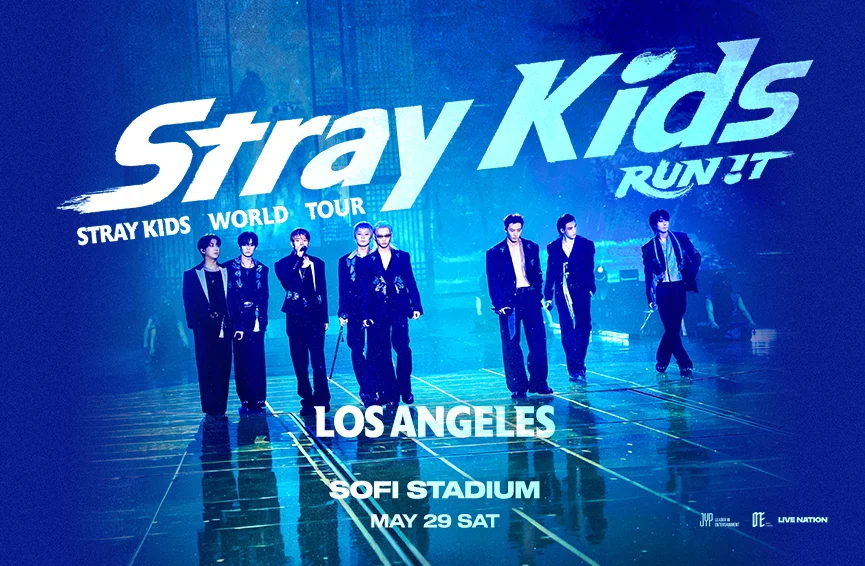

Le superstar mondiali STRAY KIDS hanno annunciato il loro attesissimo tour STRAY KIDS WORLD TOUR: RUN IT, con date in Nord America, Europa e Regno Unito, e che arriverà anche in Italia sabato 31 luglio 2027 allo Stadio San Siro di Milano!
RTL102.5 e Radio Zeta sono media partner dell’evento.
Come già annunciato in precedenza, Lee Know non prenderà parte alle tappe nordamericane ed europee del tour, perché inizierà il servizio militare obbligatorio prima dello svolgimento di queste date. Durante il periodo del suo servizio, gli altri sette membri proseguiranno il tour, continuando a portare sui palchi di tutto il mondo l'esperienza live degli Stray Kids.
Il tour prende il nome dal singolo “RUN IT”, contenuto nel decimo EP del gruppo, “THIS n THAT”, uscito ad agosto 2026. Il progetto, composto da otto tracce, esplora nuove sfumature sonore e mette in luce la versatilità artistica degli otto membri, alternando atmosfere energiche, sonorità pop e momenti più introspettivi. Anche in questo lavoro 3RACHA (il team di produzione formato da Bang Chan, Changbin e HAN) ha partecipato alla realizzazione di tutti i brani, confermando il ruolo centrale dei membri nella definizione dell'identità musicale degli Stray Kids. Il mini album “THIS n THAT”, ha debuttato direttamente al primo posto della Billboard 200, facendo diventare gli Stray Kids il primo gruppo nella storia a debuttare al primo posto della classifica con nove album consecutivi. Un traguardo che consolida ulteriormente il loro primato come gruppo K-pop con il maggior numero di album al primo posto nella storia della Billboard 200 e come gruppo con il maggior numero di album al primo posto della stessa classifica nel XXI secolo.
Il ritorno degli Stray Kids in Italia rappresenta il terzo appuntamento del gruppo nel nostro Paese. Dopo il debutto italiano, il 12 luglio 2024, sul palco degli I-Days all’Ippodromo SNAI La Maura di Milano, dove si sono esibiti davanti a 70.000 spettatori, il gruppo è tornato in Italia il 30 luglio 2025, facendo tappa allo Stadio Olimpico di Roma con il tour mondiale "dominATE".
L'annuncio arriva dopo le esibizioni speciali degli Stray Kids per STRAYCITY, che si sono svolte questo autunno in America Latina, facendo tappa a Buenos Aires, Bogotá e Città del Messico. Gli eventi hanno visto la partecipazione di diversi artisti ospiti, tra cui NEXZ, Bad Milk, Kei Linch, K4OS, Cocho, Andrés Obregón e RENEE, con formazioni differenti a seconda della città. Il gruppo è stato inoltre headliner al Rock in Rio, conquistando così due importanti primati nella storia del festival: è stato infatti il primo gruppo K-pop a ricoprire il ruolo di headliner del festival e il primo artista K-pop in assoluto a esibirsi sul suo palco.
Questi importanti traguardi si aggiungono alle precedenti partecipazioni degli Stray Kids come headliner al BST Hyde Park di Londra e al Lollapalooza Chicago nel 2024, oltre che al successo dello Stray Kids World Tour: dominATE, conclusosi nel 2025. Il tour ha attraversato 35 paesi, per un totale di 56 concerti, portando il gruppo a esibirsi in alcuni dei luoghi più iconici della musica internazionale.
Tra le tappe più significative figurano le numerose date, tutte sold out, al SoFi Stadium di Los Angeles, al Citi Field di New York, al Globe Life Field di Arlington, al Tottenham Hotspur Stadium di Londra e allo Stade de France di Parigi.
